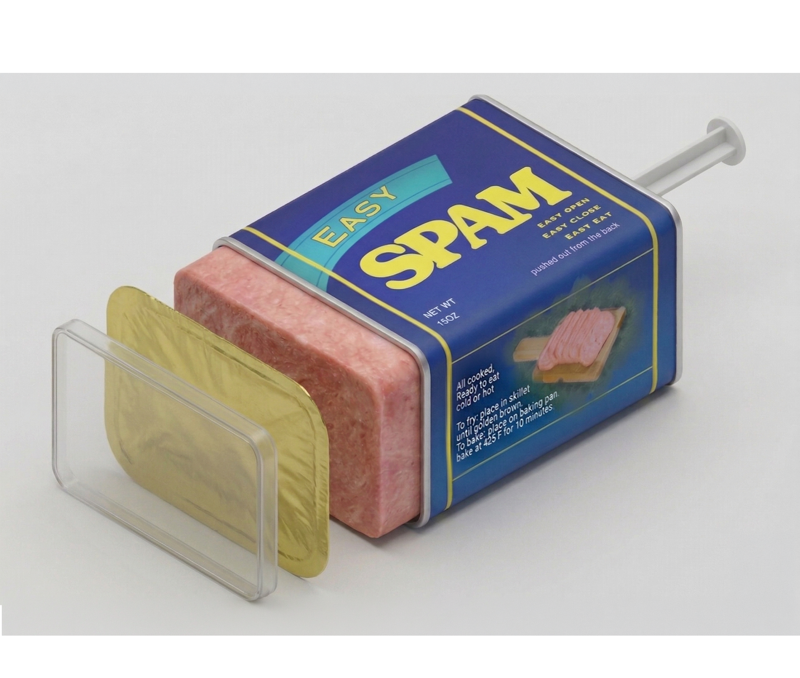
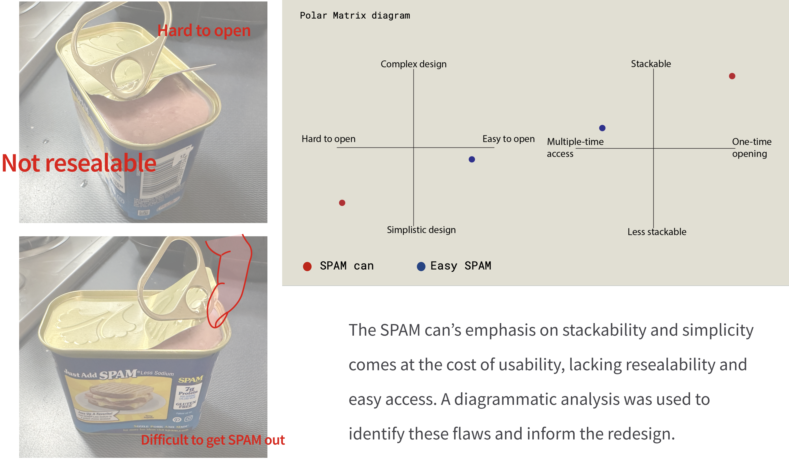
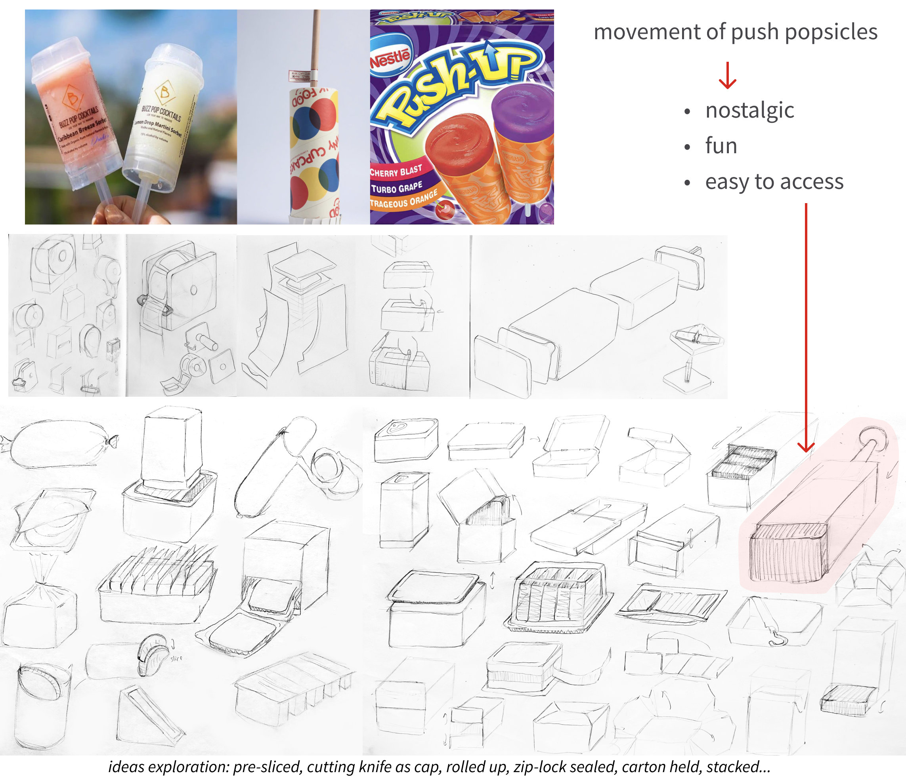
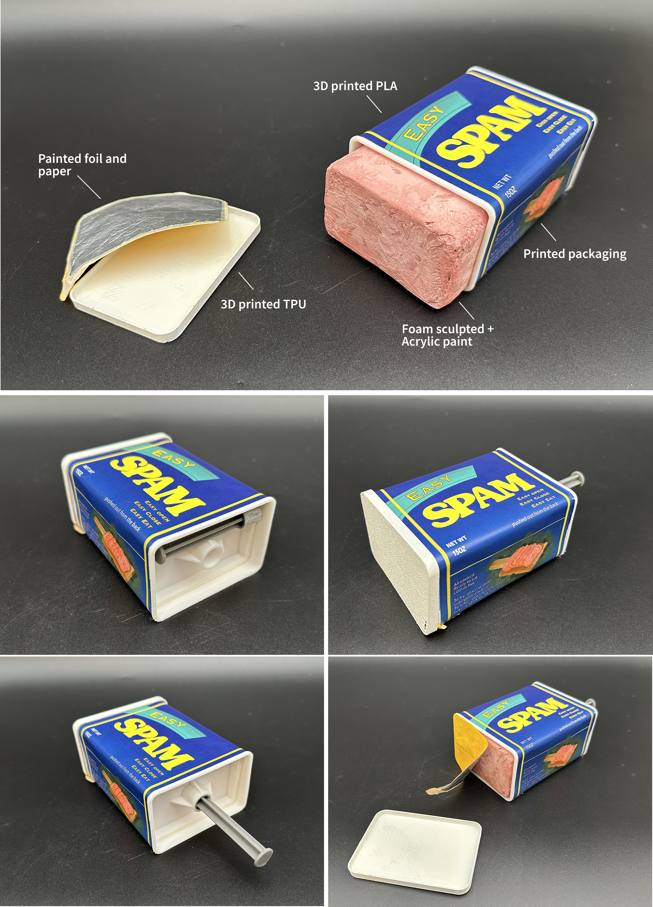

Easy SPAM
Fall 2024
Challenge:
The classic SPAM can is durable and stackable but difficult to open and store once unsealed. Opening requires tools and often leaves sharp edges, while the contents must be removed by tapping the can, making the process inconvenient and messy.
Design:
Redesigned the container to allow easy opening and resealing while maintaining the original's simple, stackable form. Inspired by push popsicles and Pringles cans, the design features a lid, foil seal, and a movable plate that pushes the contents upward without contacting the surface. A detachable plunger stick stores neatly on the back to minimize space. The product was modeled in SolidWorks and prototyped using 3D printing and foam.
Outcome:
Improves accessibility and usability of the classic SPAM container while preserving its compact, stackable qualities. The redesign simplifies serving and storage through a more intuitive mechanism.

1.Product Research and
Design Development

Design Hypothesis:The Easy SPAM packaging is designed with enhanced functionality, refining the processes of opening and removing the meat product for quicker and more effortless access. Tailored for individuals and smaller groups, the packaging eliminates the need for additional preservation after opening, effectively reducing the risk of food waste.

Initial prototype

I moved away from the sliding cap concept in favor of a push-pop–inspired mechanism, introducing a more engaging and playful user experience.
Exploded View

Packaging design

2.Final Rendering

Push stick feature

The push stick is removable and can be stored at the back, minimizing packaging volume while maintaining stackability.
3.Final Prototype
